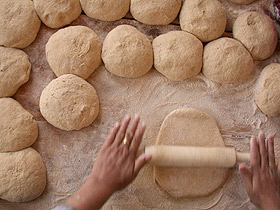

1.1.1. En la panaderia
La experiencia
El pan es un alimento básico en nuestra dieta. Se suele preparar mediante el horneado de una masa, elaborada fundamentalmente con harina de cereales, sal y agua.
La mezcla, en la mayoría de las ocasiones, suele contener levaduras para que fermente la masa y sea más esponjosa y tierna.
|
El cereal más utilizado para la elaboración del pan es la harina de trigo. También se utiliza otros cereales como el centeno, la cebada, el maíz o el arroz. Algunos tipos de pan también incorporan otros ingredientes como mantequilla, aceite de oliva, especias, frutos secos o semillas. La adición de la levadura provoca la fermentación de la masa antes del horneado, y como consecuencia, le proporciona un volumen y una esponjosidad debido a la producción de pequeñas burbujas de dióxido de carbono (CO2) que se quedan inmersas entre la masa húmeda de la harina. |
|

Wikipedia. Licencia: Dominio público
|
Selecciona la respuesta correcta
Selecciona la respuesta correcta
Verdadero o Falso
En la mezcla, la levadura transforma el almidón y los azúcares de la harina mediante una reacción química en la que se producen dióxido de carbono y alcohol. ¿De dónde provienen los átomos de carbono que forman parte del dióxido de carbono y del alcohol? Marca la respuesta correcta.
Retroalimentación
Falso
La molécula de agua solo tiene hidrógeno y oxígeno.
Retroalimentación
Falso
La sal es cloruro de sodio.
Retroalimentación
Verdadero
Retroalimentación
Falso
La materia ni se crea ni se destruye solo se transforma. En las reacciones no nucleares los elementos no se transmutan.
Pregunta de Elección Múltiple
Estos contenidos proceden de los " Estímulos PISA liberados como recursos didácticos de las Ciencias" cuyos propietarios son la OCDE y al INEE.
Obra publicada con Licencia Creative Commons Reconocimiento Compartir igual 4.0